Synagogue de Pau
Une communauté chaleureuse, au cœur de Pau depuis 1880. Pour prier, apprendre, partager un kidouch ou simplement passer dire bonjour : chacun y a sa place.
Vendredi Arvit de Chabat à 18h30Samedi Chaharit à 9h00 · Minha à –
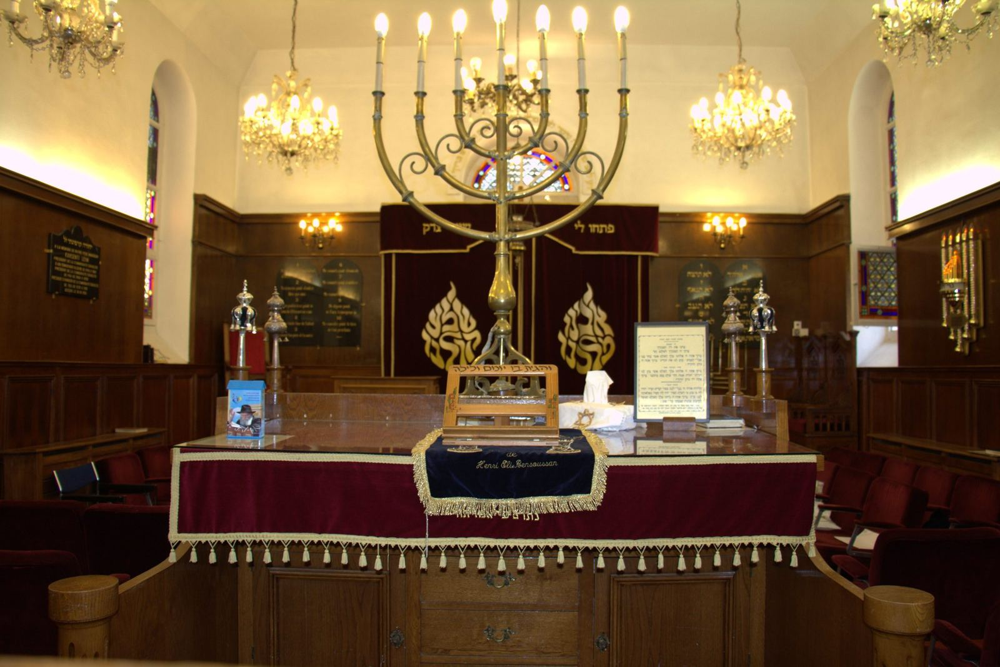
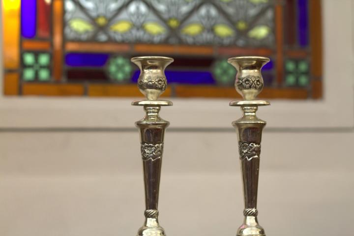
Photos NBLa vie de la synagogue, toute la semaine
Petits et grands, habitués ou de passage : il y a toujours une bonne raison de pousser la porte.
Chabat ensemble
Les offices du Chabat, puis un kidouch convivial vers 12h (que vous pouvez offrir !). Chaque présence aide à compléter le minyane !
Talmud Torah
Pour les enfants, chaque dimanche matin : apprendre, chanter les fêtes et grandir ensemble, dans la bonne humeur.
Cours de pensée juive
Un cours ouvert à tous, homme ou femme, quel que soit son niveau. Les questions sont les bienvenues.
La Makolette
L'épicerie casher de la communauté : épicerie, vins, fromages, plats cuisinés, viande sur commande.
Fêtes et conférences
Hanouka, Pourim, Pessah… et des conférences pour apprendre et se retrouver. Voir les rendez-vous ci-dessous.
Passer un Chabat à Pau
De passage ou nouvellement arrivé ? Nous pouvons vous inviter aux repas de Chabat. Écrivez au Rav.
Les rendez-vous de la synagogue
- Vendredi soirMinha, Chir Hachirim,
puis Arvit de Chabat à 18h30 - Samedi 9h00Chaharit de Chabat, suivi d'un kidouch
- Samedi après-midiMinha à –, séouda chlichit, Arvit et fin du Chabat
- Dimanche 10h-12hMakolette, l'épicerie casher
- Dimanche 10h30-12h30Talmud Torah pour les enfants
- Jeudi 19h30Cours de pensée juive
Les rendez-vous particuliers de la semaine (Roch Hodech, fêtes, conférences…) apparaissent en doré. Le programme est mis à jour chaque semaine.
Offrez le kidouch du Chabat !
Chaque samedi matin, après l'office, toute la communauté se retrouve autour du kidouch. Vous pouvez l'offrir et le dédier à une personne ou à un moment qui vous tient à cœur : la dédicace peut être annoncée à la synagogue.
- Un anniversaire
- Une naissance
- La réussite d'un enfant ou d'un petit-enfant
- Une bar ou bat mitsva
- Des fiançailles, un mariage
- Un anniversaire de mariage
- Un nouveau travail, une retraite
- Une guérison
- Une installation à Pau, une alya
- Un simple merci
- Le souvenir d'un être cher
Guy Bensoussan
06 86 76 19 55
Choisissez votre Chabat et votre dédicace, Guy s'occupe du reste.
Appeler GuyVenez comme vous êtes, on vous attend !
Une question, une première visite, envie de donner un coup de main ? Écrivez-nous : nous vous répondrons avec plaisir.
Vous souhaitez qu'une prière soit dite à la mémoire d'un être cher disparu ?
Indiquez-nous son nom et la date de son décès : chaque année, son nom sera rappelé à la synagogue le Chabat qui précède l'anniversaire du décès.
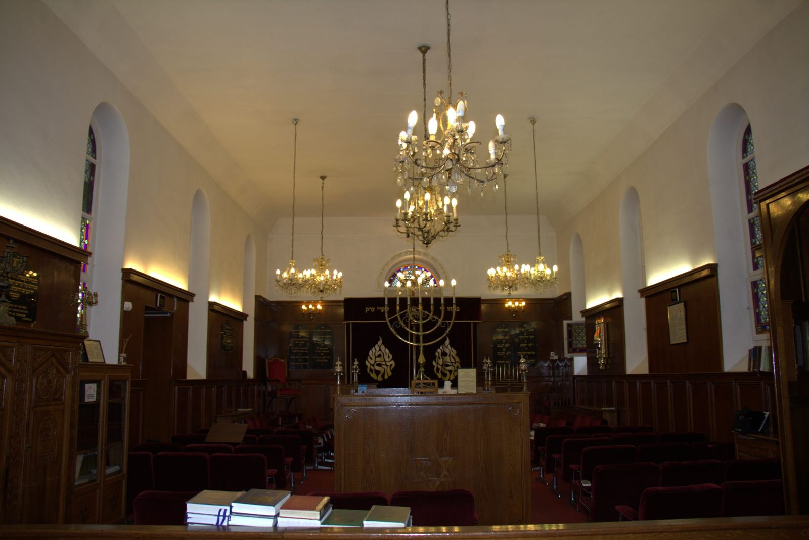
8, rue des 3 Frères Bernadac
La synagogue se trouve au centre de Pau. Pour une première visite, merci de prévenir l'accueil à l'avance : c'est ce qui nous permet de vous recevoir en toute sécurité.
Horaires
Les heures d'entrée et de sortie de Chabat et des fêtes pour Pau, de Noah 5787 à Lékh Lékha 5788.
Une semaine à la synagogue
- VendrediMinha suivie de Chir Hachirim,
puis Arvit de Chabat à 18h30 - Samedi 9h00Chaharit de Chabat, suivi d'un kidouch offert par un fidèle
- Samedi après-midiMinha à – (1 h 30 avant la fin du Chabat), suivie de la séouda chlichit, puis Arvit et fin du Chabat
- Dimanche 10h-12hMakolette
- Dimanche 10h30-12h30Talmud Torah pour les enfants
- Jeudi 19h30Cours de pensée juive
Allumer avant l'heure
Les bougies s'allument avant l'heure d'entrée du Chabat ou de la fête. La mention « ** » signifie qu'on allume à partir d'une flamme déjà allumée avant le début de la fête.
Les prochains Chabatot et fêtes
| Date | Paracha / fête | Entrée | Sortie |
|---|
Entrée : heure limite d'allumage des bougies, la veille au soir.
Toute l'année 5787 (Chabatot et fêtes)
| Date | Paracha / fête | Entrée | Sortie |
|---|
À imprimer recto verso et à aimanter sur le frigo.
Les horaires détaillés du mois (zmanim)
Pour chaque jour à Pau : aube, lever et coucher du soleil, fin du Chéma, Min'ha, allumage des bougies, sortie des étoiles…
La communauté
L'Association Cultuelle Israélite de Pau fait vivre la synagogue. Le Centre Culturel Israélite de Pau porte les activités culturelles.
Les offices
Le vendredi soir et le samedi matin, suivis d'un kidouch offert par un fidèle. Chacun y est le bienvenu.
La Makolette
L'épicerie casher de la communauté : charcuterie, épicerie, plats cuisinés, vin, jus de raisin, fromages… et un large choix de viande surgelée sur commande (veau, agneau, volaille, bœuf).
Talmud Torah
Pour les enfants, chaque dimanche matin : apprendre, chanter les fêtes et grandir ensemble, dans la bonne humeur.
Cours de pensée juive
Un cours hebdomadaire ouvert à tous, homme ou femme, quel que soit son niveau.
Rav Mendy Matusof
Habad Pyrénées. Le Rav répond aux questions sur les offices, les fêtes et la halakha. Il prépare chaque semaine le programme de la synagogue.
Email : habadpyrenees@gmail.com
Vivre son judaïsme à Pau
Le mikvé
La communauté dispose d'un mikvé, pour la pureté familiale, les conversions et la tevila des ustensiles neufs.
Pour les dames, prendre rendez-vous :
Eliora Ribes · 06 81 61 29 53
Shayna Matusof · 06 65 95 47 09
Passer un Chabat à Pau
Les familles nouvellement arrivées ou de passage, et les étudiants, peuvent être invités pour les repas de Chabat. Des 'halot et des plats à emporter peuvent aussi être fournis, et nous indiquons les hôtels proches de la synagogue adaptés au Chabat.
Renseignements auprès du Rav : habadpyrenees@gmail.com
Hevra Kadicha
La communauté dispose d'une 'Hevra Kadicha et d'un carré juif au cimetière municipal de Pau. En cas de décès, contactez le Rav Mendy Matusof au 06 22 10 75 49.
![Logo Hébreu Pas à Pas]()
Hébreu Pas à Pas
Lire l'hébreu, suivre l'office plus facilement, préparer son alya ou parler avec la famille en Israël : Eric Benetasse, professeur diplômé de l'Université hébraïque de Jérusalem, enseigne l'hébreu depuis 2015.
Cours individuels ou en petit groupe, en visio (Zoom), pour les débutants comme pour les plus avancés. À votre rythme, et toujours avec le sourire.
Membres de l'ACIP : le premier cours est offert.
WhatsApp : 05 59 72 59 00 · Email : hebreupasapas@gmail.com
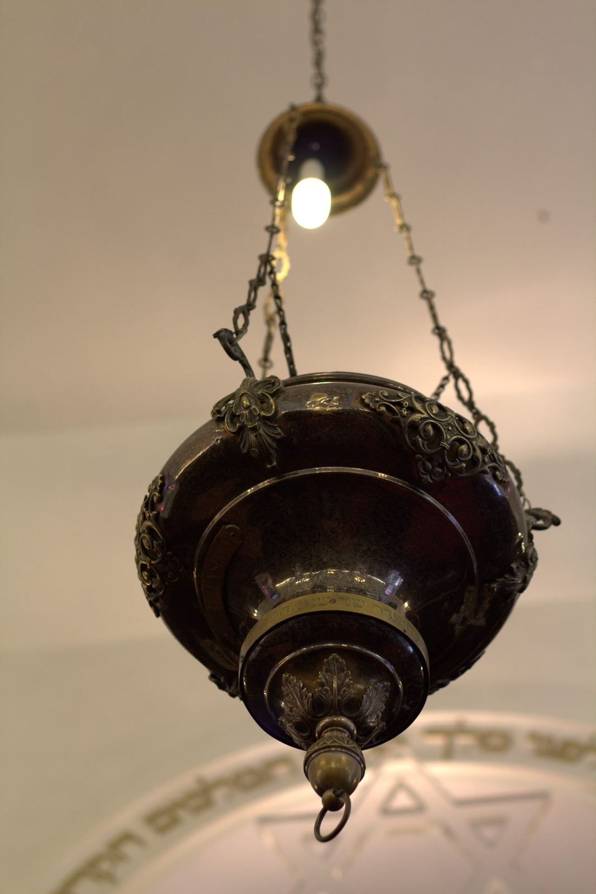
Une prière pour un être cher disparu
Vous souhaitez qu'une prière soit dite à la mémoire d'un proche ? Chaque année, le Chabat qui précède l'anniversaire de son décès, son nom sera rappelé à la synagogue lors de la azkara.
Il suffit de nous indiquer son nom, son prénom hébraïque, le prénom de son père ou de sa mère et la date de son décès.
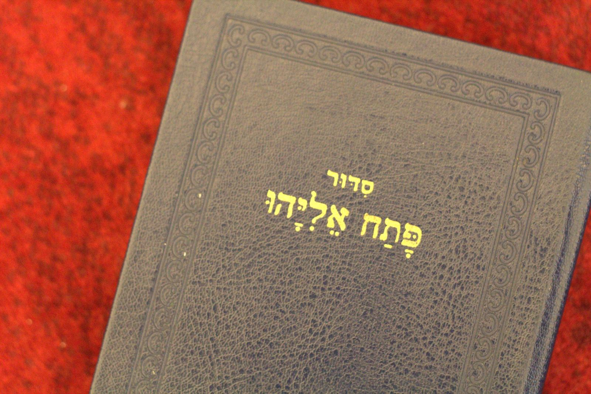
La lettre de la communauté
L'ACIP envoie par email les horaires de l'année, les fêtes et les nouvelles de la communauté. Pour la recevoir, écrivez à synagoguedepau64@gmail.com.
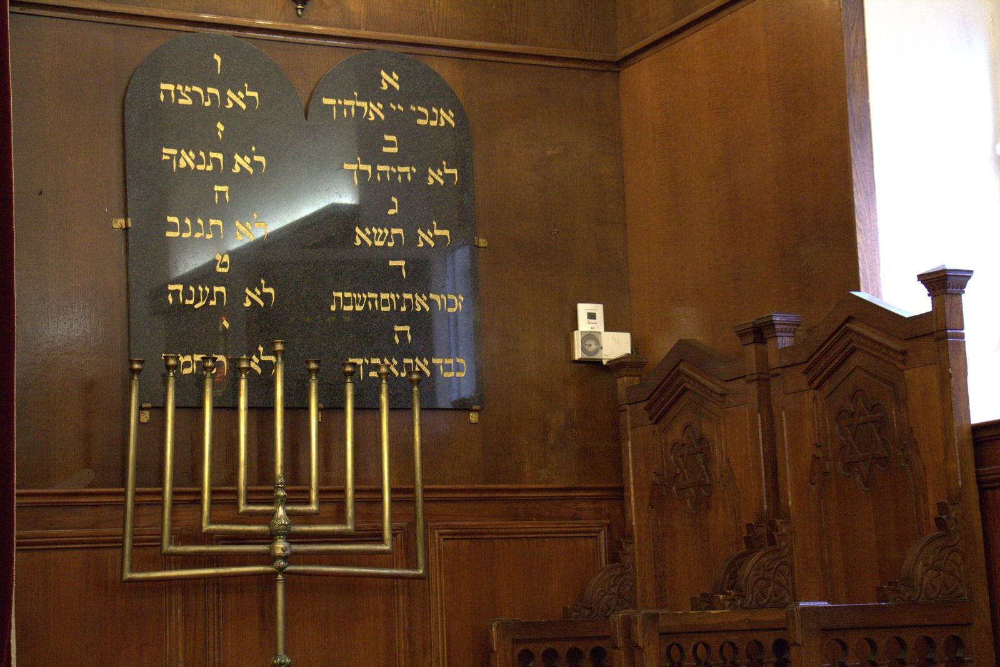
Présence juive à Pau
Cinq siècles d'histoire au pied des Pyrénées, de l'exil d'Espagne à la communauté d'aujourd'hui.
Jews expelled from Spain after 1492 found refuge at the foot of the Pyrenees, and their traces appear in Pau's parish records. After the 1787 Edict of Tolerance and the emancipation of 1791, the community grew: in 1822 it bought land on the chemin de Buros for its cemetery, which today holds 118 graves.
The first consistorial rabbi of Pau was appointed in 1875, and the synagogue, designed by the departmental architect Gustave Lévy with stained glass by the Mauméjean workshops, was inaugurated in 1880.
The synagogue stayed open throughout the Second World War, with Rabbi Bauer. On 26 August 1942, a round-up of “foreign” Jews led to 184 arrests; nearby, the Gurs camp interned some 64,000 people between 1939 and 1945, more than 20,000 of them Jews.
Almost emptied after the war, the community was reborn in the 1960s with the Lacq gas field and the arrival of Jews from North Africa. Today about a hundred people make up the community, and the synagogue opens every Shabbat and festival.
The full history page is available in French.
יהודים שגורשו מספרד אחרי 1492 מצאו מקלט למרגלות הפירנאים, ועקבותיהם מופיעים בספרי הקהילה הנוצרית של פאו. אחרי צו הסובלנות של 1787 והאמנציפציה של 1791 הקהילה גדלה: ב־1822 רכשה קרקע בדרך ביורוס לבית הקברות שלה, שבו כיום 118 קברים.
הרב הקונסיסטוריאלי הראשון של פאו מונה ב־1875, ובית הכנסת, שתכנן האדריכל גוסטב לוי עם ויטראז׳ים מבית המלאכה מומז׳ן, נחנך ב־1880.
בית הכנסת נשאר פתוח לאורך כל מלחמת העולם השנייה, עם הרב באואר. ב־26 באוגוסט 1942 נעצרו 184 יהודים „זרים” במבצע מעצרים; בקרבת מקום, במחנה גורס, נכלאו כ־64,000 איש בין 1939 ל־1945, מהם יותר מ־20,000 יהודים.
הקהילה כמעט התרוקנה אחרי המלחמה, וקמה לתחייה בשנות ה־60 עם גילוי הגז בלאק ובוא יהודי צפון אפריקה. כיום מונה הקהילה כמאה איש, ובית הכנסת פתוח בכל שבת וחג.
דף ההיסטוריה המלא זמין בצרפתית.
- Après 1492
Au pied des Pyrénées, Pau accueille des Juifs chassés d'Espagne par le décret d'expulsion. On retrouve leur trace dans les actes de conversion des registres paroissiaux.
- 1787-1808
L'édit de tolérance de Louis XVI (7 novembre 1787) ouvre l'état civil aux non-catholiques. En 1791, la Révolution émancipe les Juifs, qui deviennent citoyens. Napoléon organise le culte israélite : le décret impérial du 17 mars 1808 crée les consistoires. Celui des Basses-Pyrénées s'installe à Bayonne et couvre aussi les Landes.
- 1822
La petite communauté paloise achète à un ancien instituteur, Pierre Pées, un terrain de 4 ares et 64 centiares pour 366,50 francs, chemin de Buros, pour y créer son cimetière. Il compte aujourd'hui 118 tombes.
- 1875
Le 26 juillet, le Conseil des ministres nomme le premier rabbin consistorial de Pau.
- 1878-1880
Le 26 juin 1878, le conseil municipal, où siègent Lazare Léon et Mayer Lévy, autorise l'achat d'un terrain pour construire un oratoire. La synagogue est inaugurée en 1880.
Un des vitraux de la salle de prière. - 1939-1945
La synagogue fonctionne pendant toute la guerre, avec le rabbin Bauer. Pau est d'abord en zone libre, et la frontière espagnole toute proche représente un espoir. Le 26 août 1942, une rafle des Juifs « étrangers » fait 184 arrestations. À 50 km, le camp de Gurs interne environ 64 000 personnes entre 1939 et 1945, dont plus de 20 000 Juifs ; plus de 1 000 y meurent et des milliers sont déportés vers Auschwitz. Une grande rafle était prévue le 10 juillet 1944 : les listes, retrouvées en 2024, comptent 1 900 noms.
- Années 1960
Presque vidée après la guerre, la communauté renaît avec la découverte du gaz de Lacq et l'arrivée des Juifs d'Afrique du Nord : mikvé, centre communautaire et association culturelle voient le jour.
- Aujourd'hui
La communauté compte aujourd'hui une centaine de personnes. La synagogue ouvre chaque Chabat et chaque fête.
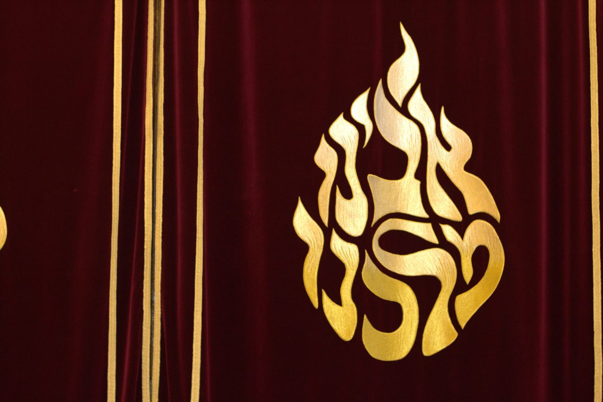
Galerie
L'intérieur de la synagogue : la salle, l'Aron, les vitraux, les objets du culte.
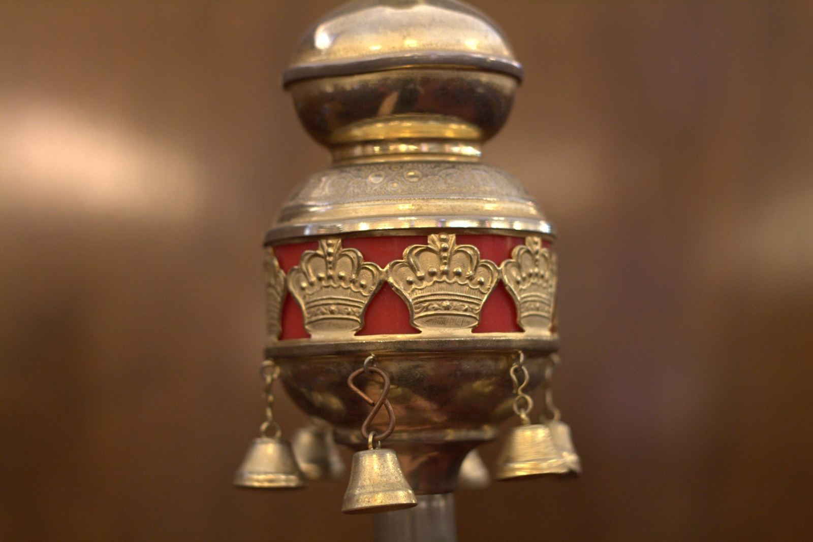
Soutenir la synagogue
La synagogue, le mikvé, la Makolette et les offices vivent grâce à la générosité de chacun.
Faire un don
Vous pouvez soutenir l'Association Cultuelle Israélite de Pau par un don en ligne, sécurisé, sur la plateforme Allodons. Votre don à une association cultuelle ouvre droit à un reçu fiscal.
Honorer une promesse de don
Vous avez promis un don à la synagogue, par exemple lors d'une montée à la Torah le samedi matin ? Vous pouvez l'honorer en ligne de la même façon, en indiquant le Chabat et l'occasion dans le message du don.
Pour toute question : synagoguedepau64@gmail.com
Offrez le kidouch du Chabat !
Chaque samedi matin, après l'office, toute la communauté se retrouve autour du kidouch. Vous pouvez l'offrir et le dédier à une personne ou à un moment qui vous tient à cœur : la dédicace peut être annoncée à la synagogue.
- Un anniversaire
- Une naissance
- La réussite d'un enfant ou d'un petit-enfant
- Une bar ou bat mitsva
- Des fiançailles, un mariage
- Un anniversaire de mariage
- Un nouveau travail, une retraite
- Une guérison
- Une installation à Pau, une alya
- Un simple merci
- Le souvenir d'un être cher
Guy Bensoussan
06 86 76 19 55
Choisissez votre Chabat et votre dédicace, Guy s'occupe du reste.
Appeler GuyVenir & contact
Chacun est le bienvenu. Pour une première visite, prévenez-nous à l'avance.
- Adresse
- 8, rue des 3 Frères Bernadac, 64000 Pau
- Téléphone
- 05 59 62 37 85RépondeurLaissez distinctement votre nom et votre numéro, nous vous rappelons.
- synagoguedepau64@gmail.com
- Plan
- Ouvrir la carte
Avant une première visite, prévenez-nous
Pour être accueilli en toute sécurité, contactez au préalable François Basse, président de l'ACIP, à l'adresse synagoguedepau64@gmail.com.
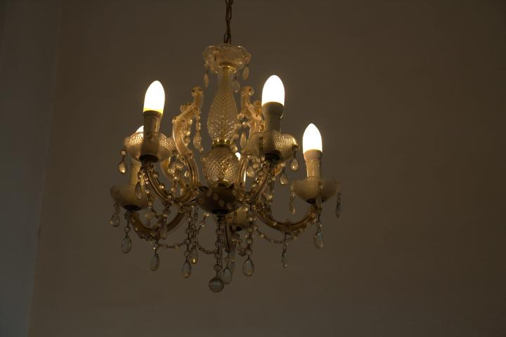
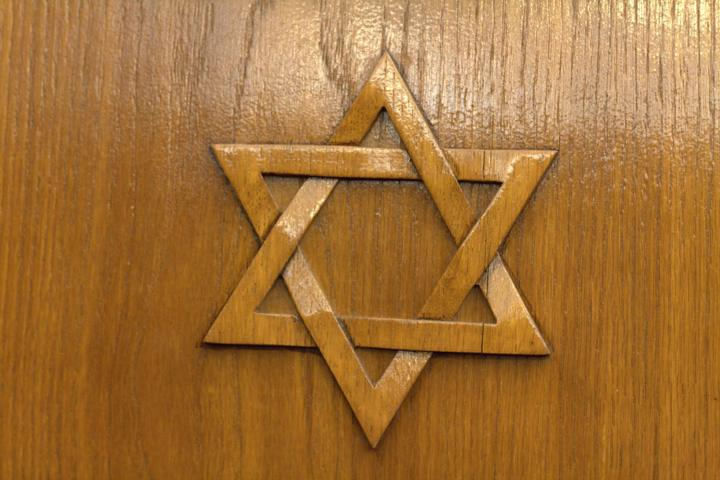
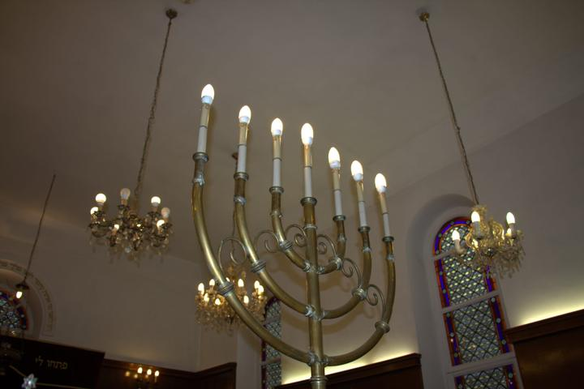